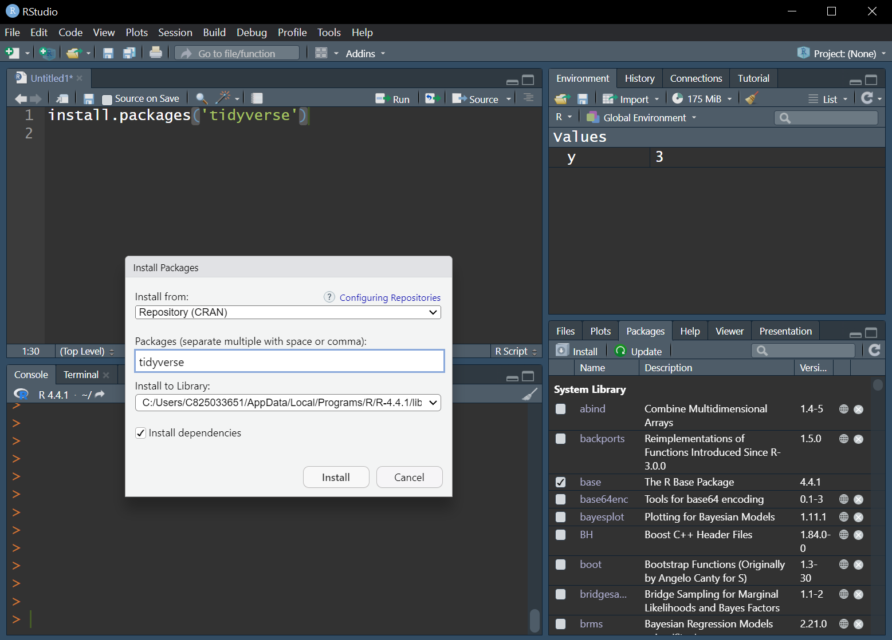

[1] 3Simple R Intro
RStudio

RStudio

Installing Packages
The language of R
Objects
A storage place for information; stored in the “Environment”
‘Attributes’ describes the structure or information of the object
The language of R
Objects

The language of R
Objects
The language of R
Objects
The language of R
Functions
‘does stuff’; creates or manipulates objects
‘Arguments’ are the types of things a function is asking for; the inputs
The language of R
object = function(argument = input1, argument = input2)
object = function(input1, input2)
The language of R
Functions
The language of R
Functions

The language of R
Wrapping functions
The language of R
Values
- numeric
- integer
- character
- factor
Objects
- vector
- matrix
- array
- list
- dataframe
- S3, S4, S5, and beyond
Types of Values
Numeric
Types of Objects
Vector
[1] 4 5 6The value 4 is in element/index/position 1 of the vector
The value 6 is in element/index/position 3 of the vector
:::
Types of Objects
Subsetting a vector
Types of Objects
Vector of factors
Types of Objects
Matrix
Types of Objects
Subsetting a matrix
Types of Objects
Array
Types of Objects
List
Types of Objects
Data frame
E.g., a row for each observation and a column for each variable (can be different types).